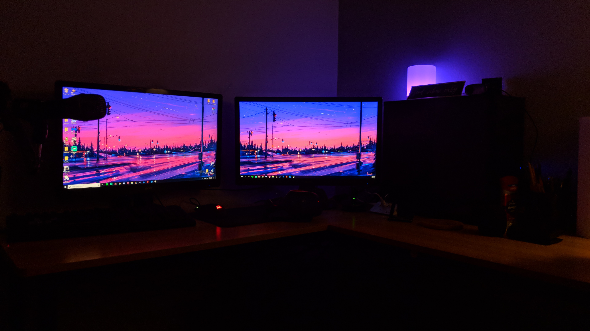

Who Am I
I only started to delve into learning code languages and things computer related at the start of my
freshman year. So I don't have a ton of experience as I'm only in my second month of my sophomore year, but I already can confidently
say I'm definitely interested in pursuing
a career in a field at least closely related. The things I've learned so far that have peaked my interest most would be different code
languages. I'm definitely not a master of any yet and to be fair probably not very good, but I also have  skipped around a lot and
haven't spent too much time outside of the classroom on
coding. What I mean by this is that I usually tend to get all my work done on my class projects in class on time. Which means that I'd
have to come up with a program to make just for fun if I wanted to do something new at home. Of course I saw this as too hard and just
didn't do anything. Anyways, originally I took a class called Computer Science Principles where I was taught Python. If I'm
being honest Python was very easy to learn which was surprising at the time since I figured a code language would be super complicated
. In all fairness though now that I have some experience in other languages/markup like java, javascript, html, and css I understand that
Python is very different from the rest and is probably considered simpler.
(If you've already read the bottom paragraph on the home page skip to the text below)
This would explain why I saw it as easy to learn. After that class I took Computer Science A, which was two steps up in the INSPIRE
program at my high school. I never knew this until a couple weeks into the term. This was a big surprise to me because apparently
it's normal for students in that class to have taken the java class before, because in CSA (Computer Science A) you use Java and work in
android studio and blueJ. I figured this class would be a lot harder than CSP since the class wasn't meant to teach you Java but
how to use it, this obviously means I had to learn Java while learning to use it. I personally think that this is a better
and more efficient way of teaching a language, but is still harder. This class helped me a lot in understanding programs, object-oriented code and being able
to read code written by someone else. This is also what convinced me that I really enjoy this field. Beforehand in CSP I already
had a spiked interest in the topics, but I wasn't sure if that was just because it was Python or if I would be able to enjoy other
things and languages. At this point I'm pretty sure of the idea of pursuing this as a career. This pretty much brings you up to the
present in my adventure of learning coding, programming, etc. Currently I'm in a web design class which is what taught me to make
websites like the one you're reading this from. This is one of the cooler things I've done with coding in my opinion. Anyways, I guess
we'll have to wait a couple years to see where else this brings me in my life.